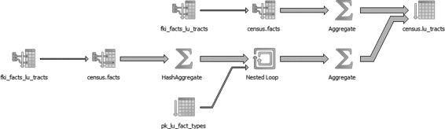
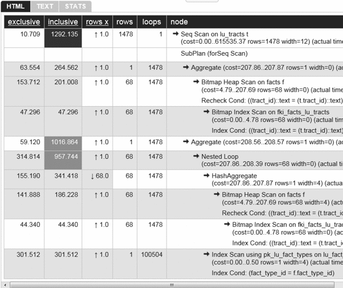
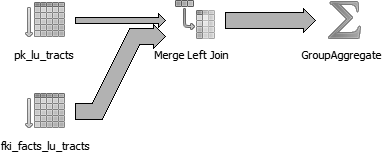
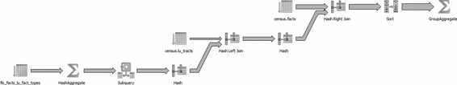
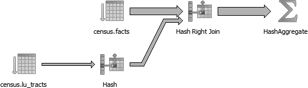

最好也最简单的性能调优方法就是学会编写优秀的 SQL 语句。我们在大多数客户的项目中见过的 SQL 语句都写得不够好，它们未能发挥出 PostgreSQL 的真正威力。
写出的 SQL 语句很糟糕一般有两大主要原因。第一个原因是很多人会盲目地复用以前的 SQL 编写经验。例如有人曾经写过一个使用了左连接的 SQL 语句并且执行效果还不错，那么他此后不管实际情况是什么样都一直使用左连接语法，但实际上，在有更多表参与关联运算的情况下，最好是使用内连接。与其他很多编程语言不一样，SQL 语言的编写经验不能盲目地复用。
第二个原因是人们对于最新的 SQL 语法特性一般无法及时跟进并学习了解。如果用户不及时更新自己的知识，在新版本的 PostgreSQL 上还基于旧版本的语法编写 SQL，那么新版本中引入的那些可以提升性能、简化开发的语法特性对他来说就毫无意义。
要想能够编写出高效的 SQL 是需要很多练习的。只要你编写的 SQL 语句能得到正确结果，那么这个语句就不能算错，但其性能可能很差。本节中我们将指出人们常犯的一些错误。尽管本书是关于 PostgreSQL 的，但我们给出的这些建议其实也适用于其他的关系型数据库。
SELECT语句中滥用子查询新手们常犯的一个典型错误就是容易将子查询当成一个完全独立的数据集来使用。SQL 语言有一个与传统的编程语言很不一样的地方，就是 SQL 语言中并没有很强烈的“黑盒”概念。也就是说，编写一堆互相独立的子查询并把每个子查询当作一个“黑盒”数据块来看待，只要能得到最后结果就行，而不管其他，这种思路是错误的。它事实上割裂了子查询代码块内部处理逻辑与子查询代码块外部处理逻辑之间的联系，没有将整个 SQL 语句当成一个有机的整体来处理。从多个子查询中取数据与从多个表或者视图中取数据是一样重要的，代码写得不好效率就会很低。
示例 9-12 中演示了一个滥用子查询的例子，把子查询当黑盒使用的思想就会导致这种写法。
示例 9-12：滥用子查询
SELECT tract_id,
(SELECT COUNT(*) FROM census.facts As F WHERE F.tract_id = T.tract_id) As
num_facts,
(SELECT COUNT(*)
FROM census.lu_fact_types As Y
WHERE Y.fact_type_id IN (
SELECT fact_type_id
FROM census.facts F
WHERE F.tract_id = T.tract_id
)
) As num_fact_types
FROM census.lu_tracts As T;
上面的 SQL 语句如果改为示例 9-13 的写法效率会更高。下面的写法合并了多个 SELECT 动作并使用了关联查询机制，不但比上面的语句更简短，速度也更快。如果表的数据量很大或者硬件性能较差，这两种写法之间的性能差异会更明显。
示例 9-13：针对滥用子查询的语句的简化改写
SELECT T.tract_id,
COUNT(f.fact_type_id) As num_facts,
COUNT(DISTINCT fact_type_id) As num_fact_types
FROM census.lu_tracts As T LEFT JOIN census.facts As F ON T.tract_id = F.tract_id
GROUP BY T.tract_id;
图 9-4 显示的是示例 9-12 中的语句的执行计划，为了帮你免除查看字符型执行计划的痛苦，我们选择了以图形化方式展示。图 9-5 使用 http://explain.depesz.com 站点提供的工具将其执行计划转换为以 HTML 表格方式呈现，也可以提高你的查看效率。

图 9-4 ：滥用子查询的 SQL 语句的执行计划图形化展示

图 9-5 ：滥用子查询的 SQL 语句的执行计划表格式展示
图 9-6 显示的是示例 9-13 中的简化后语句的执行计划，从图中可以看到简化了多少执行步骤。

图 9-6 ：删除多余子查询后的执行计划图形化展示
请注意我们并没有要求你完全不用子查询，我们只是建议你在确有必要时才使用，并且使用时应当注意考虑如何将子查询与 SQL 语句的主干进行融合，也许你会发现根本不需要通过子查询来实现你所需要的功能。总之请牢记：子查询不是独立的黑盒数据块，应与主语句通盘考虑后再结合使用。
SELECT *语法SELECT * 经常会导致性能浪费，会出现仅仅需要 10 页数据却查出 1000 页数据这种情况，这显然会导致网络传输负担加大，而且还会出现两个你可能意想不到的问题：
第一个问题与大对象有关。PostgreSQL 会使用 TOAST（全称 The Oversized-Attribute Storage Technique，即超大尺寸属性存储技术）机制来存储二进制大对象以及超大文本。TOAST 机制会将超过主表存储限制的数据存储到一张辅助表中。因此，读取超大字段就是一个多表关联操作，而这必定是个耗时的过程。举个例子，如果某表包含文本数据，其中存储了一整部的《战争与和平》这么庞大的内容，然后你对这个表做了一个 SELECT * 操作，那么不难想象这个操作会慢到什么程度。
第二个问题与视图有关。我们定义视图的时候一般没办法做到完全精确地指定列，也就是说视图中一般都会带若干可能不需要的列。PostgreSQL 的视图定义功能是很强大的，你可以使用 SELECT * 语句来定义视图，系统会自动将星号替换为目的表的完整字段列表，你也可以在视图定义语句中包含复杂运算表达式以及关联查询。这些建视图的语句都是合法的，没有任何问题，但用户访问时就麻烦了，一旦对这种复杂视图执行 SELECT * 查询，那么视图定义中所有的复杂列都会经历漫长的运算过程，总体查询速度会很慢。
为了解释清楚以上观点，下面我们会在示例 9-12 中建一个带复杂子查询的 SQL 语句为基础的视图，使用的基表是 census 中的表：
CREATE OR REPLACE VIEW vw_stats AS
SELECT tract_id,
(SELECT COUNT(*) FROM census.facts As F WHERE F.tract_id = T.tract_id) As
num_facts,
(SELECT COUNT(*)
FROM census.lu_fact_types As Y
WHERE Y.fact_type_id IN (
SELECT fact_type_id
FROM census.facts F
WHERE F.tract_id = T.tract_id
)
) As num_fact_types
FROM census.lu_tracts As T;
如果我们针对此视图执行以下语句：
SELECT tract_id FROM vw_stats;
在我们的测试环境上该语句执行耗时大约是 21 毫秒，速度很快，因为该语句没有访问 num_facts 和 num_fact_type 这两个视图字段，这两个字段需要经过复杂的运算才能得到结果。你查看一下该语句的执行结果就可以发现其中没有任何一个步骤会访问 facts 表，因为规划器分析该语句后知道根本不需要访问此表。但如果我们使用下面的语句来访问上述视图：
SELECT * FROM vw_stats;
在我们的环境上执行时间飙升到 681 毫秒，其执行计划如图 9-4 所示。这里前后两个语句的性能差别是毫秒级，但如果表的记录数增加到千万级，列数增加到数百个，那么前后两个语句的性能差异就非常恐怖了。按照前一种写法，查询可以很快完成，你可以搞定后准点下班；按照后一种写法，你就得呆在办公室加班来等这个查询执行完毕。
CASE语法CASE 是 ANSI SQL 标准语法，其功能其实是很强大的，但我们很少见到过有人能好好利用它，其实我们对这一点也感到很惊讶。在很多需要聚合运算的场景中，使用 CASE 语法能够有效替代子查询。接下来我们使用两个例子来演示这一点，一个使用 CASE，一个使用子查询，然后我们会比较二者的执行计划和性能差异。示例 9-14 使用了子查询语法。
示例 9-14：使用子查询而非
CASE
SELECT T.tract_id, COUNT(*) As tot, type_1.tot AS type_1
FROM
census.lu_tracts AS T LEFT JOIN
(SELECT tract_id, COUNT(*) As tot
FROM census.facts
WHERE fact_type_id = 131
GROUP BY tract_id
) As type_1 ON T.tract_id = type_1.tract_id LEFT JOIN
census.facts AS F ON T.tract_id = F.tract_id
GROUP BY T.tract_id, type_1.tot;
图 9-7 是示例 9-14 的执行计划图示。

图 9-7：使用子查询而非 CASE 的执行计划
然后我们使用 CASE 语法改写这个查询。你会发现优化后的查询效率更高也更容易理解，如示例 9-15 所示。
示例 9-15：使用
CASE语法替代子查询
SELECT T.tract_id, COUNT(*) As tot,
COUNT(CASE WHEN F.fact_type_id = 131 THEN 1 ELSE NULL END) AS type_1
FROM census.lu_tracts AS T LEFT JOIN census.facts AS F
ON T.tract_id = F.tract_id
GROUP BY T.tract_id;
图 9-8 是示例 9-15 中的语句的执行计划图示。

图 9-8：使用 CASE 代替子查询后的执行计划
尽管优化后的语句依然没用上 fact_type 索引，但其执行效率还是提升了，因为规划器仅对 facts 表做了一次扫描。一般来说，执行计划越短小，其执行过程就越容易理解，执行效率也越高，不过这并不是绝对的。
Filter语法替代CASE语法PostgreSQL 9.4 版中引入了新的 FILTER 关键字，我们在 7.3 节中介绍过其用法。在使用了 CASE 的聚合函数中总是可以用 FILTER 来代替 CASE 的，替换以后不但语法上看起来更整洁而且执行效率也会有所提高。在示例 9-16 中，我们使用 FILTER 对示例 9-15 的语句进行了改写。
示例 9-16：使用
FILTER语法来替代子查询
SELECT T.tract_id, COUNT(*) As tot,
COUNT(*) FILTER(WHERE F.fact_type_id = 131) AS type_1
FROM census.lu_tracts AS T LEFT JOIN census.facts AS F
ON T.tract_id = F.tract_id
GROUP BY T.tract_id;
在我们的测试环境上，对示例 9-15 的语句用 FILTER 替换 CASE 后性能提升仅有大约 1 毫秒，而且两种写法的执行计划也基本类似。